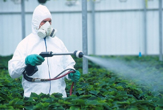
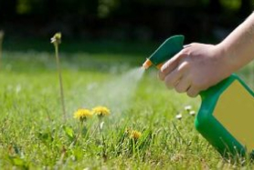
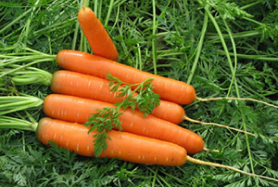
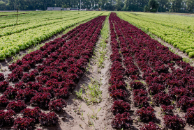
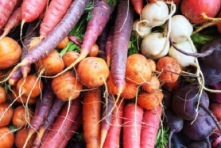

Статьи для аграриев на agrolife.ua
5 YouTube каналов, необходимых каждому агроному
Новые технологии и течения в агрономии меняются так же часто, как и в любой другой сфере.
Современному
агроному иногда может быть трудно отслеживать все новинки и оставаться в курсе текущих дел. Чтобы
облегчить себе задачу, можно воспользоваться “дарами” интернета, а именно видео-платформой YouTube.

20 Ноября 2018
Можно ли сжечь растение инсектицидом: правила применения веществ
Можно ли сжечь растение инсектицидом: правила применения веществ. Ожог для растения это огромные
стресс, который замедляет развитие пострадавшего растения на срок от 5 до 20 дней.

20 Ноября 2018
Гербициды: классы опасности
Гербициды это общее название средств химического происхождения для защиты растений. Их применяют для
уничтожения нежелательной растительности (сорняков).

20 Ноября 2018
Лучшие сорта моркови в Украине: пять лучших гибридов
В этой статье описывается топ-5 лучших гибридов моркови, на посадке которых фермеры хорошо
зарабатывают, получая отличные урожаи.

20 Ноября 2018
Технология выращивания салата
Посевной, огородный салат является однолеткой. Всего насчитывают три разновидности - кочанный,
листовой и ромен. Кочанные сорта в открытом грунте уже готовы к сбору во второй половине мая и все
лето. Ромен больше подходит для выращивания в зимний период благодаря своей холодостойкости. В
основном салат дает до трех урожаев за год в открытом грунте.

20 Ноября 2018
Хранение корнеплодов: от чего зависит срок свежести зимой
Морковь, сельдерей, свекла, редька. Все знают, что эти овощи отлично хранятся и сохраняют свои
качества в течение зимы. Они очень ценны для людей, так как накапливают в себе большое количество
питательных веществ и витаминов, которые невозможно получить зимой. Некоторые огородники, пытаясь
сохранить корнеплоды на зиму, нарушают правила хранения и в итоге плоды портятся. Сегодня мы
расскажем вам как правильно хранить овощи, чтобы сохранить их на всю зиму.